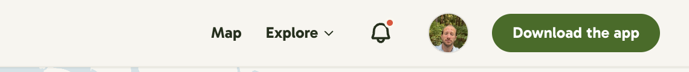
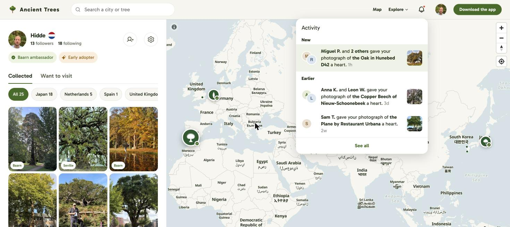
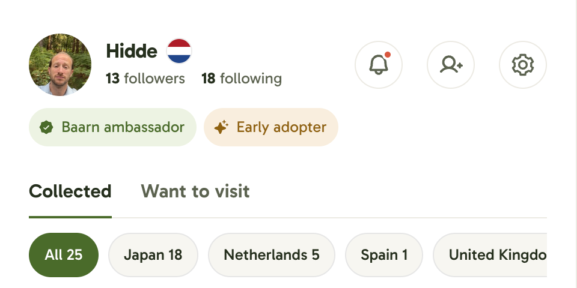

De bel op het web
Op jouw echte, ingelogde pagina (je eigen Chrome), met de bel en de lijst erop gelegd. Niets hiervan is opgeslagen.
Benchmark
| Wie | Waar | Wat een klik doet | Bron |
|---|---|---|---|
| Strava | Bel rechtsboven, naast je profielfoto, op elke pagina | Opent je meldingen (hoe precies: niet gevonden) | Strava help 216918367 |
| Instagram (2016) | Hartje rechtsboven in de balk | Klapt een lijstje uit met de laatste activiteit | PetaPixel, Search Engine Journal |
| Instagram (sinds 2022) | Een regel "Notifications" in de zijbalk | Schuift een paneel open | TechCrunch |
| Facebook (uit het hoofd) | Bel rechtsboven naast je foto | Klapt een lijst uit, met "See all" | niet nagekeken |
Op een computer: de bel staat naast je gezicht en klapt eerst een lijstje uit, met een weg naar de hele lijst. Je gezicht zelf blijft naar je profiel gaan (jouw keuze van 28 oktober).
Voorstel A: bel naast je gezicht, klapt een lijstje uit (Strava, Instagram, Facebook)


Klik op de bel: het lijstje klapt uit over de pagina, nieuwste bovenaan, "See all" gaat naar /activity. Een klik op een regel opent die boom. Op de telefoon staat de bel tussen zoeken en het menu (dan wordt "Download the app" iets smaller), of als regel in het menu.
Voorstel B: de bel op My trees, naast Find people en het tandwiel

Zelfde rij als de knoppen die er al staan. Rustiger in de balk, maar je ziet het stipje alleen als je naar je profiel gaat. In de app staat de bel op Discover, dus web en app zouden hier verschillen.
Mijn advies
A. Zo doen Strava en Instagram het. Het stipje is op elke pagina te zien, en een klik op je gezicht blijft naar je profiel gaan. B kan erbij als tweede ingang, maar is niet nodig.